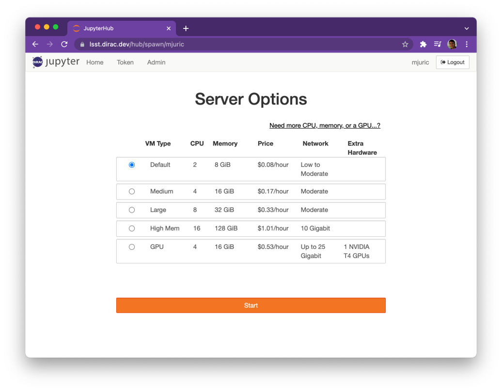

Available Resources¶
Disk space¶
1TB of space shared by everyone. We can add more if (when) needed.
Computational resources¶
Machines are available with different combinations of CPU, RAM, and GPU.
Please use the smallest machine that can fit your workload (to help us conserve $$).
Also, larger machines may take more time to start up (up to ~5 minutes).
You can access different server options by clicking Need more CPU, memory, or a GPU… ? on the Server Options page.
